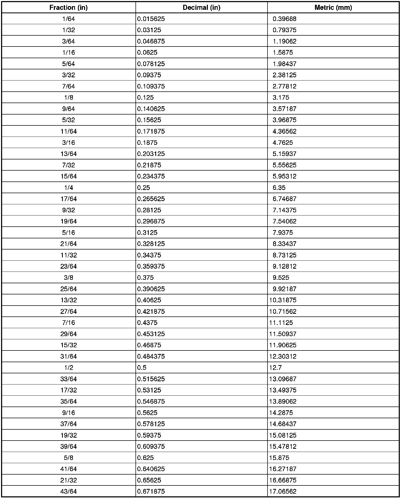
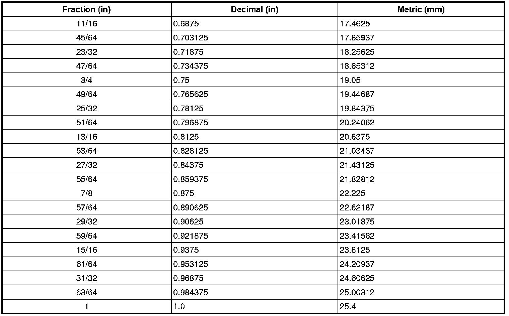

Operation CHARM
: Car repair manuals for everyone.
Home
>>
Cadillac
>>
2008
>>
SRX AWD V8-4.6L
>>
Repair and Diagnosis
>>
Powertrain Management
>>
Transmission Control Systems
>>
Actuators and Solenoids - Transmission and Drivetrain
>>
Actuators and Solenoids - A/T
>>
Shift Solenoid
>>
Diagrams
>>
Diagnostic Aids
>>
Decimal and Metric Equivalents
Decimal and Metric Equivalents
Decimal and Metric Equivalents

